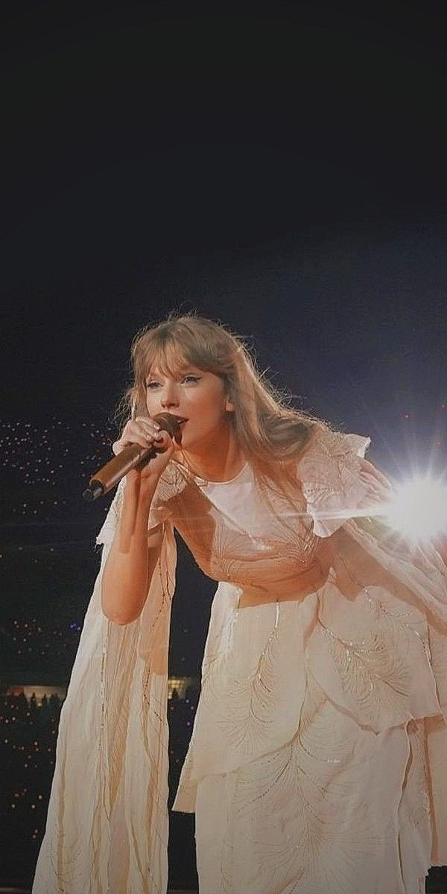

"Lover" is a song from her seventh studio
album of the same name,
which was released in August 2019. The song serves
as the title track of the album.
"Lover" is a romantic ballad that showcases Swift's
songwriting skills
and her ability to craft poignant and heartfelt lyrics.
The song "Lover" explores themes of love,
commitment, and devotion.
It has a nostalgic and tender tone, with
Swift singing about
finding true love
and cherishing the moments spent with her partner.
The song's lyrics convey a sense of intimacy
and deep connection
between two people in a relationship. |

|
"Love Story" is a song from her second studio album, "Fearless,"
released in 2008.
The song was written by Swift herself
and produced by Nathan Chapman and Swift.
It is one of Swift's signature songs and is widely regarded
as one of her most successful and iconic tracks.
"Love Story" is a country-pop song that tells the story of a
young couple who are
in love but face opposition from their families.
The lyrics are inspired by William Shakespeare's
play "Romeo and Juliet," with Swift narrating a
modern-day version of the classic tale.
Despite the obstacles they face,
the couple's love triumphs in the end. |
 |
"Cardigan" is a song from her eighth studio album,
"folklore," released in July 2020. The song
was written by Taylor Swift
and Aaron Dessner, who is a member of the
indie rock band The National.
"Cardigan" is a folk-pop ballad that
explores themes
of nostalgia, love, and escapism.
In "Cardigan," Swift uses the metaphor of a
cardigan sweater to convey a sense of comfort
and familiarity in a relationship. The lyrics
depict a narrative of love, loss, and resilience,
as the protagonist finds solace in memories and
embraces the idea of finding warmth and security
in the midst of uncertainty. |

|
"Crul Summer" appears to be a misspelling.
It's possible you meant "Cruel Summer," which is a
song by Taylor Swift from her seventh studio album,
"Lover," released in 2019.
"Cruel Summer" is an upbeat pop track co-written
by Taylor Swift,
Jack Antonoff, and St. Vincent (Annie Clark).
The song
explores themes of tumultuous relationships,
intense emotions,
and the complexities of love during the
summer season.
It features pulsating beats, catchy hooks,
and Swift's
signature storytelling lyrics. |
 |